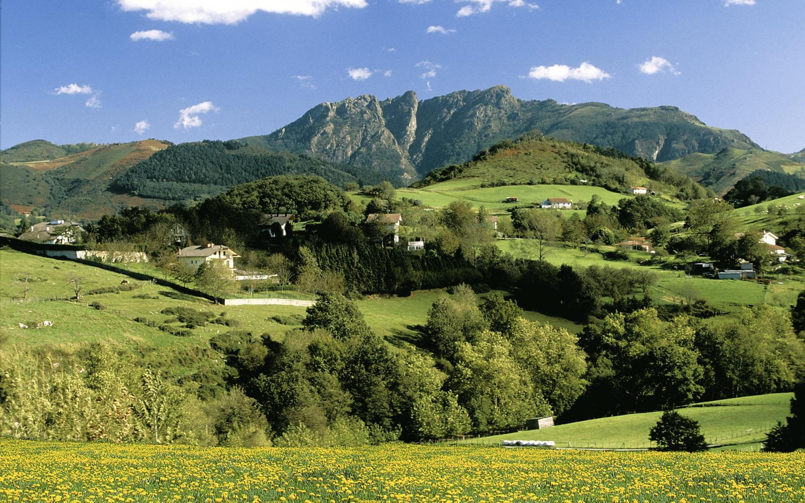

Top three areas to enjoy at Bidasoa Bay

Huge coastline in Hendaya beach
Expansive Basque beach with golden sand, Atlantic surf, and famous twin rocks.

Best hiking in the Aia mountains
Ancient granite massif featuring three distinct, rugged peaks rising dramatically near Irun.

Eat pintxos in the big Village of Hondarribia
Savoring gourmet miniature cuisine on lively streets lined with colorful fisherman houses.